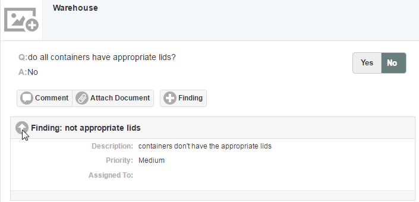
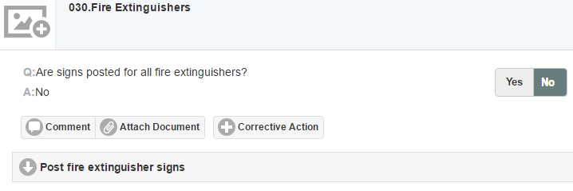
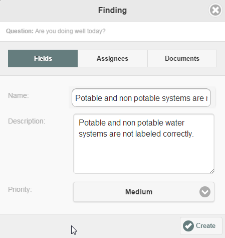
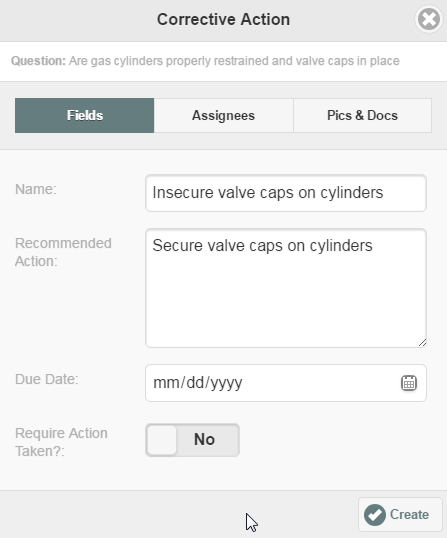

Depending on the inspection configuration, you may create corrective actions directly for each question as needed, or it may be necessary to create a Finding before you can create a related corrective action.
The process for creating Findings and Corrective Actions is the same, but will depend on the inspection type configuration.
Automatic Findings and Corrective Actions: If the inspection is configured for automatic Findings and Corrective Actions, the Findings and Corrective Actions will be indicated on the inspection form when the response to a question triggers them. The indicated findings and corrective actions will be created when the inspection is marked complete and saved.
Automatic Finding: Corrective action associated with this finding is not shown, but will be created when inspection is completed.

Automatic Corrective Action:

Manual Findings and Corrective Actions Alternatively, when you choose to create a new Finding or Corrective Action manually, some pre-configured default Findings and Corrective Actions may be offered in a drop-down list. You can select the appropriate item. If no default Findings or Corrective Actions are configured, you will be able to create and define your own, as appropriate for the circumstances.
To create a finding manually:
Click New Finding for the appropriate question.
Enter a finding Name and Description, and select the Priority for the finding. OR, if a drop-down list is offered, select the appropriate Finding from the list.
Select the Assignees tab and select an assignee.
If you want to attach a document, click the Documents tab. Click Choose File. Browse to find and select the file you want to attach, then click Upload.
Click Submit.

After a finding has been created, you can edit the finding in order to rename it, update the description or priority, assign it to a different user, or upload additional supporting documents, if you wish.
To edit or remove a finding:
Click the arrow next to the finding to expand it.
Click Edit Finding to edit the finding details.
Click Remove Finding to delete the finding.
To create a corrective action manually:
Click the +Corrective Action button.
The Corrective Action dialog is displayed.
Enter a Name for the action, OR, if a drop-down list is offered, select the appropriate action from the list. Other fields may be completed from default, or may be entered manually, including the Recommended Action and Due Date.
Require Action Taken (optional): If this field is Yes, it will require the assignee to complete the Actual Action Taken field and will prevent closing the inspection if the field is blank. (This field is not enabled for pre-defined default corrective actions.)
Select the Assign tab and select one or more assignee(s).
You can assign to a group, to a single individual within a group, or to more than one individual.
To assign to an individual, enter a name (or partial text) in the search box. Matching users and the group(s) they belong to will be displayed for your selection.

Do not mark the inspection complete until you have created all the corrective actions needed. After the inspection is marked complete, new corrective actions cannot be created, but existing ones may be edited.